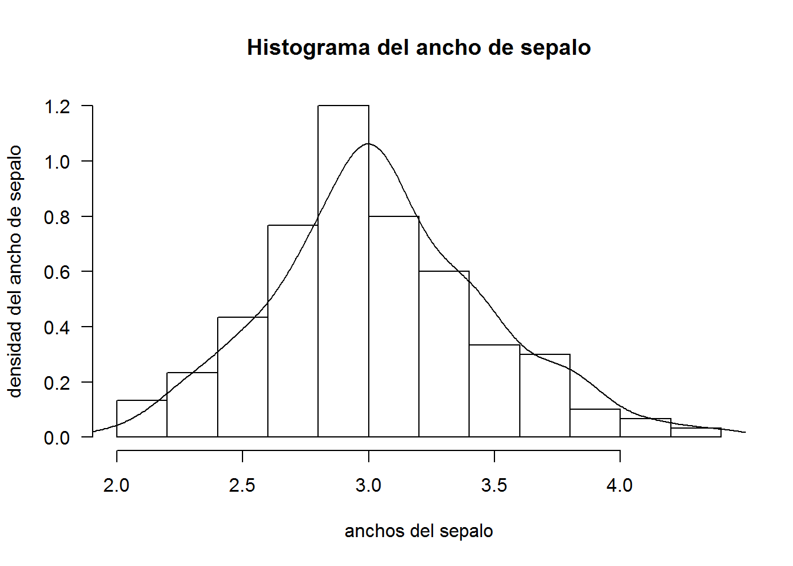
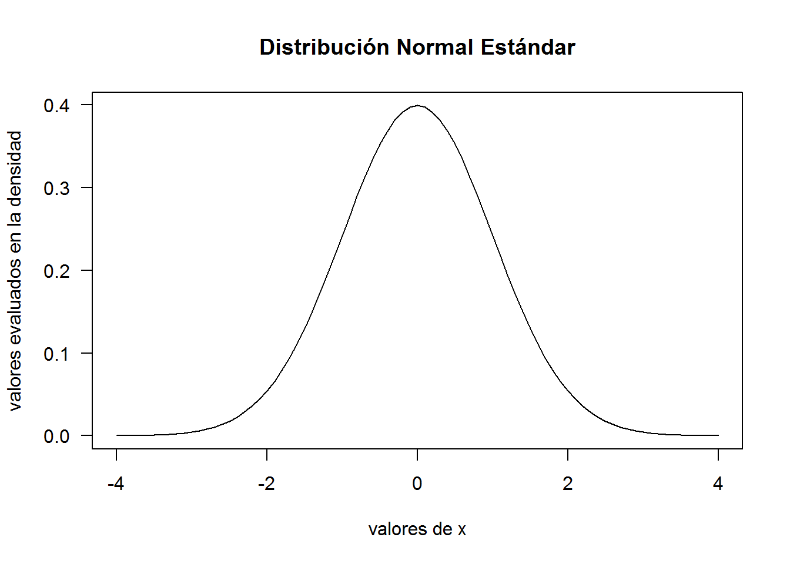

Sabemos que podemos encontrar dos casos donde encontremos una densidad en una variable aleatoria continua y vamos a ver de una manera muy breve y conscisa el uso de cada una de ellas.
Si nosotros tenemos un conjunto de datos usualmente nos interesa saber el comportamiento de ellos y observar si es similar o parecida a alguna de las distribuciones que nosotros conocemos y así poder ajustar de alguna manera el fenómeno y hacerlo más comprensible para nosotros, es el caso de la siguiente base de datos del R llamada iris, y observaremos la variable ancho de sepalo (para mayor información sobre la base de datos consulte help(iris)). Para esto usaremos el comando hist()que nos permitirá realizar un histograma para la variable, además del comando lines() el cual nos servirá para graficar la curva sobre el histograma
hist(iris$Sepal.Width, main = "Histograma del ancho de sepalo", xlab = "anchos del sepalo", ylab = "densidad del ancho de sepalo", freq = F,las=1)
lines(density(iris$Sepal.Width))
Consideremos una variable aleatoria normal, recuerde que si \(X\sim N(\mu,\sigma^{2})\), entonces su función densidad de probabilidad viene dada por:
\[f_{X}(x)=\frac{1}{\sqrt{2\pi}\sigma} e^{- \frac{1}{2}\left(\frac{x-\mu}{\sigma}\right)^{2}}, \quad x \in (-\infty,\infty)\]
Para graficar la curva de nuestra densidad usaremos el comando plot() que viene en el paquete básico del R, donde crearemos un vector para los valores de x y utilizamos la función dnorm()para evaluar nuestra densidad
# Creamos el vector que va desde -4 a 4 con saltos de 0.1
x<- seq(-4,4,0.1)
# Evaluamos los valores en la función en una normal media=0, desviación estándar=1
y<- dnorm(x)
#Graficamos
plot(x,y, main = "Distribución Normal Estándar", las=1, xlab = "valores de x", ylab = "valores evaluados en la densidad", type = "l")
Otra función que nos permite generar la curva de la densidad es: curve() que también es del paquete básico del R